Appendix¶
Appendix¶
A0: Parallel Programming Crash Course¶
Throughout this book, we've scaled LLM training from one to hundreds of GPUs. This requires the communication and synchronization of weights, gradients, and data between all the machines. There’s a set of distributed patterns to achieve exactly that called collective operations. In this section, we’ll do a small crash course on those operations - Broadcast, AllReduce, Scatter, and more. Let’s dive in!
The general setup is that we have a number of independent nodes, which could be CPU cores, GPUs, or compute nodes. Each performs some computation, and then we want to communicate the result or parts of it to the other nodes for the next computation step (\(t+1\)).
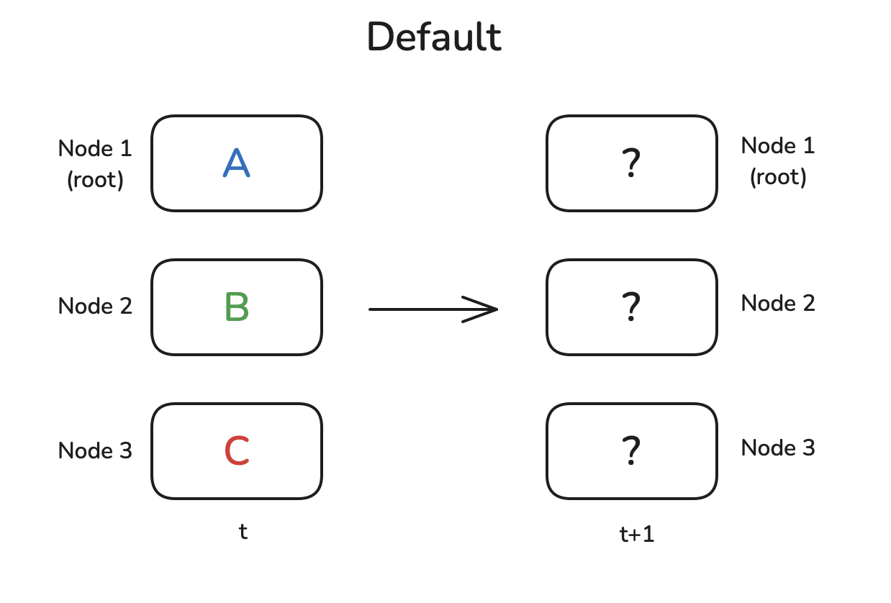
Maybe we need to send the result from one node to all other nodes, or to sum all the intermediate results from each node to report the overall result. Usually, there is one node with an elevated status that plays a central role, here denoted with root, that is the target or source of some operations. Let’s start with one of the simplest primitives: a Broadcast operation.
Broadcast¶
A very common pattern is that you have some data on node 1 and you want to share it with all the other nodes so they can do some computation with the data. The Broadcast operation does just that:
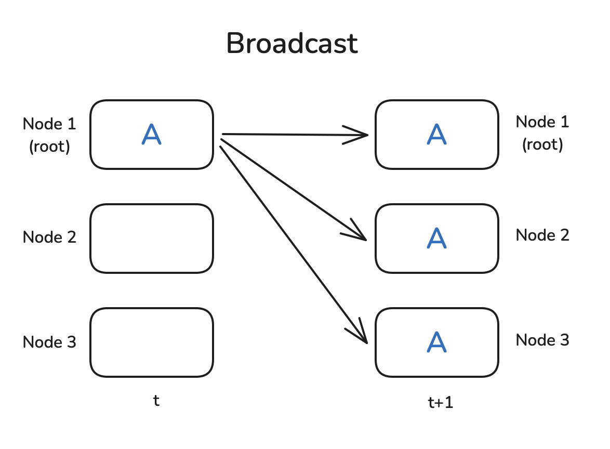
Collective operations are provided natively by PyTorch, so we can easily write a small example that demonstrates how broadcasting works. We first need to initialize a process group with dist.initi_process_group, which sets up the communication backend (we’ll talk about NCCL later). It determines how many workers (a.k.a. nodes) exist and assigns a rank to each one (which we can get with dist.get_rank). Finally, it establishes a connection between the workers.
To showcase the dist.broadcast operation, let's create a tensor with nonzero values on rank=0 and tensors full of zeros on the other workers. We then distribute the rank=0 tensor to all other ranks with dist.broadcast(tensor, src=0):
You can run the above script with torchrun --nproc_per_node=3 dist_op.py (you’ll need three GPUs for this, or change nproc_per_node accordingly), and you should see the following output:
Great, seems like it works as expected. Note that the rank messages can be printed out of order, as we have no control over which print statement is executed first (we ordered them here for readability). Now let’s move on to the Reduce and AllReduce patterns!
Reduce & AllReduce¶
Reduce patterns are among the most fundamental patterns in distributed data processing. The idea is that you want to combine the data present on each node through a function f(), which may perform, for instance, summation or averaging. In the Reduce paradigm the result is sent to the root node only, whereas in the AllReduce case the result is broadcast to all nodes:
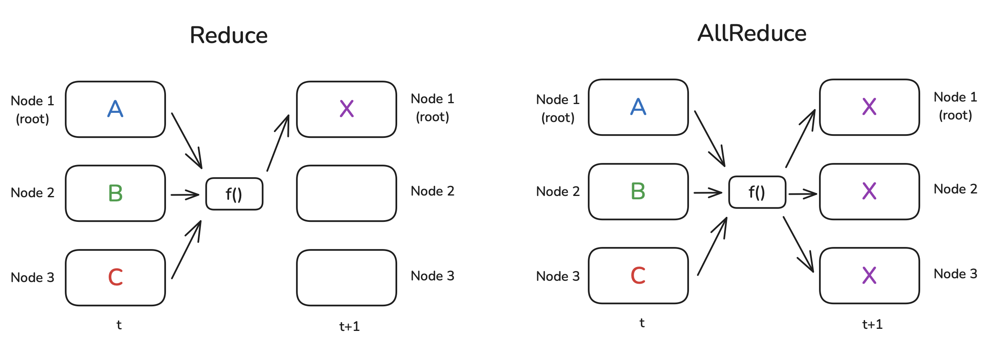
Of course, there's no magic “free-flying” node that can perform this operation itself; generally, each node does a partial computation, with the nodes organized in a ring or tree structure. Here’s a simple example: let’s say we need to compute a sum of numbers on each nodes and our nodes are connected in a ring pattern. The first node sends its number to a neighbor, which adds its number to the received number before forwarding it to the next neighbor. At the end of a round through the ring of nodes, the first node will receive the total sum.
Here’s the code to run a simple Reduce operation summing the tensors. We specify the operation to use with op=dist.ReduceOp.SUM (you can find more information on the supported operations in the PyTorch docs):
Note that in the Reduce operation, only the tensor on the dst node is updated:
Similarly, we can perform an AllReduce as follows (we don’t need to specify a destination in this case):
In this case, the result is available on all nodes:
Now let’s turn to our next distributed communication operation. In many real cases, each node individually performs many complex computations and we need to share the final results among all nodes. Gather and AllGather are the operations we want to use in this case. Let’s take a look!
Gather & AllGather¶
Gather and AllGather are quite similar to the Broadcast operation in that they allow distributing data among nodes without modification. The main difference to Broadcast is that there is not one value we need to share from one node to all other nodes; instead, each node has an individual chunk of data, and we want to either gather all the data on one node (in the case of Gather) or gather all the data on all nodes (in the case of AllGather). A picture being worth a thousand words, let’s take a look:
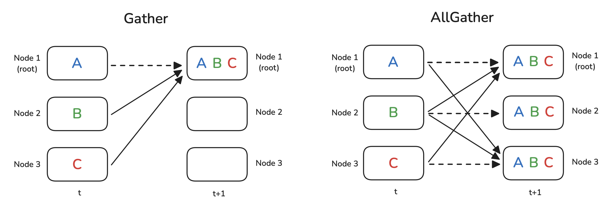
The dashed lines indicate that some data actually doesn’t move at all (since it’s already present on the node).
In the case of the Gather operation, we need to prepare a container object where the gathered tensors can be stored - in this example, the gather_list object:
And we see that gather_list indeed contains the tensors of all ranks:
The only thing we need to change for the AllGather example is that every node will need a placeholder for the results:
Here, we see that each node now has all the data:
What about the inverse of a Gather? In this case, we have all the data on one node and want to distribute/slice it among nodes, possibly with some intermediate processing. We can use the Scatter or, in the case where an operation is performed on the data before distributing it, ReduceScatter pattern for this.
Scatter & ReduceScatter¶
As the name suggests, the goal of the Scatter operation is to take data on one node and scatter it across all the nodes, which it does by distributing a slice of the data to each node. It’s thus different from the Broadcast operation, which sends each node a complete copy of the data without slicing it, and it’s the logical inverse of the Gather operation.
The ReduceScatter pattern is slightly more complex. As in the AllReduce case , you apply an operation on the data from all nodes. But unlike AllReduce where each node receives the full output tensor, in ReduceScatter each node only receives a slice of the output tensor. The following image illustrates the difference between these operations:
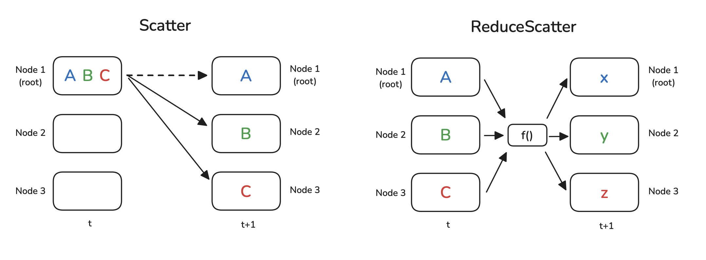
The Scatter operation is written in code as the opposite of Gather: instead of preparing a list of tensors as a target, we prepare the source data as a list of tensors we want to distribute. We also need to specify the src:
As a result, the empty tensors get filled with the contents of scatter_list
Let’s create some more interesting data to demonstrate the ReduceScatter logic. On each node, we'll create a list of two-element vectors with a power exponent and an offset function of the node rank:
The print statements reveal the pattern of data that we created. We also immediately see the ReduceScatter pattern in action - the first rank received the sum of the first tensor from each node, the second rank the sum of the second tensor on each node, and so on:
Next, let's have a quick look at a common implementation of AllReduce that uses ReduceScatter and AllGather: Ring AllReduce.
Ring AllReduce¶
Ring AllReduce is a specific implementation of AllReduce optimized for scalability. Rather than all devices communicating with each other directly, which could create communication bottlenecks, Ring AllReduce can be broken down into two key steps: ReduceScatter and AllGather. Here's how it works:
- ReduceScatter
- AllGather
Let’s illustrate this with the following gifs, where we have 5 GPUs, each with a tensor of length 5. The first animation shows the ReduceScatter step, where, at the end, each GPU receives the reduced results for a specific chunk of data (the orange rectangle).
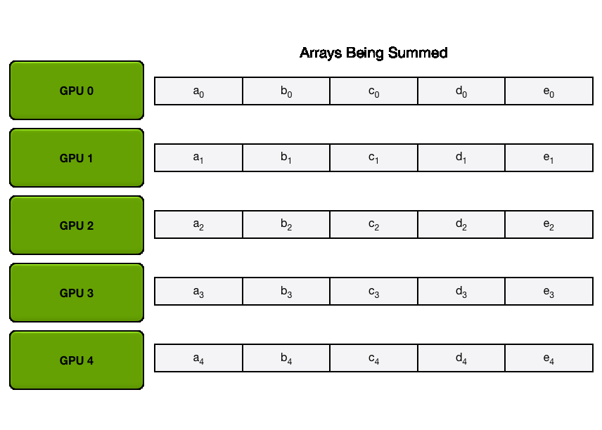
The next animation shows the AllGather step, where, at the end, each GPU obtains the full results of the AllReduce operation:
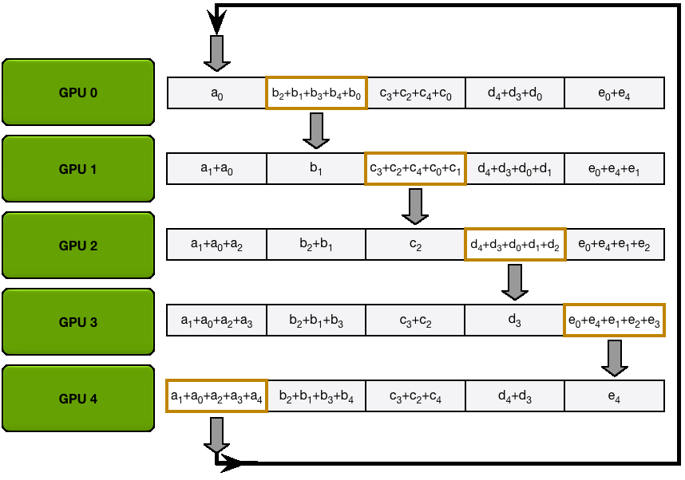
You may have noticed that each of the \(N\) GPUs sends and receives values \(N-1\) times during both the ReduceScatter and AllGather steps. Each GPU sends \(\frac{K}{N}\) values per transfer, where \(K\) is the total number of values in the array being summed across the GPUs. Therefore, the total amount of data transferred to and from each GPU is \(2 \times (N-1) \times \frac{K}{N}\). When \(N\) (the number of GPUs) is large, the total amount of data transferred to and from each GPU is approximately \(2 \times K\), where \(K\) is the total number of parameters.
There are two key things to keep in mind for AllReduce:
- The communication cost for AllReduce is approximately \(2 \times K\) when \(N\) (the number of GPUs) is large.
- An AllReduce operation can be broken down into a ReduceScatter followed by an AllGather. The communication cost for these two operations is half that of the AllReduce, which is approximately \(K\).
As you can see, this implementation can make efficient use of even the limited bandwidth between nodes.
You've now seen the main building blocks of distributed operations - but before we see them in action, let’s have a look at a special operation used for synchronization: the Barrier operation.
Barrier¶
Barrier is a simple operation to synchronize all nodes. A barrier is not lifted until all nodes have reached it. Only then are the nodes allowed to continue with further computations:
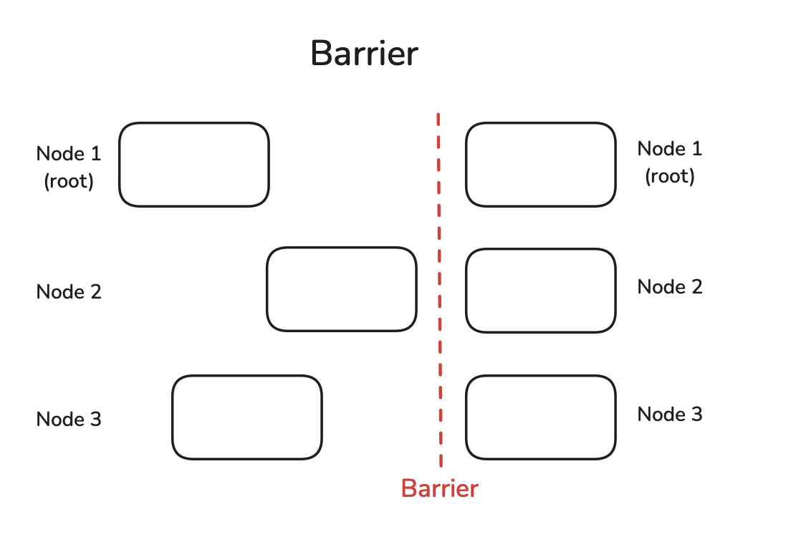
We can easily simulate delayed nodes by setting up a different sleep time on each node and seeing how long it takes for all of them to pass the barrier:
We can see that although the first rank didn’t sleep at all, it also took it 2 seconds to pass the barrier:
We need to be careful with synchronizing all nodes like this, as this defeats the purpose of parallel independent operations and might thus slow down the processing as a whole. In many situations, it can be just fine if a fast node starts processing the next job ahead of the others, as the fast node could be slower in the next iteration, thereby evening out the delay over the whole process.
Before turning to practical distributed training implementations, let’s first solve a mystery: What the heck is NCCL?
NCCL¶
When training large models on many GPUs, we may sometimes strike gold, but we will always encounter nickel (or NCCL 🥁)! What’s that?
There are several libraries that implement collective communication and are supported by PyTorch: there’s the classic MPI (Message Passing Interface), Gloo by Meta, and finally NCCL (the NVIDIA Collective Communications Library). They all provide similar functionality in terms of collective communication patterns but are optimized for different hardware setups - NCCL is designed to serve GPU-GPU communication efficiently, while MPI and Gloo are set up for CPU-CPU or CPU-GPU communication. PyTorch provides a great guide to decide which one to use, but here's what it boils down to:
- GPU training: use NCCL
- CPU training: use Gloo
There are a few finer points in the decision tree that we leave to the reader to explore in the PyTorch guide referenced above.
A1: Distributed Training Profiling¶
Kernels¶
Let's begin by assuming for now that the kernels are already integrated into PyTorch. As a simple example, we can look at the layer normalization function implemented in PyTorch as torch.nn.functional.layer_norm. There are several methods to profile the kernel that underlies this function. The most straightforward approach might be to use the Python time module. However, since CUDA operations are asynchronous, measuring time with this method will only capture the overhead associated with launching the kernel in Python, rather than the actual execution time of the kernel itself.
To address this, we can utilize torch.cuda.Event for accurate timing and employ the torch.cuda.synchronize() directive to ensure we wait for the kernel execution to complete. This approach is demonstrated in the following snippet:
A more efficient approach to profiling is to utilize the PyTorch profiler, as explained previously. For example, consider the following code:
This would print aggregated profiling results sorted by the total CUDA time, and the output would be:
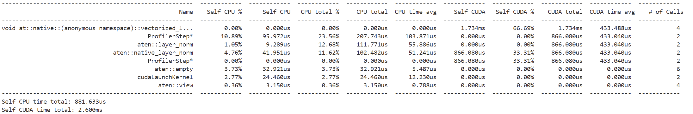
You can also try to inspect the trace, as we previously mentioned, on chrome://tracing/.
💡 Tip
If you're new to this tool, you can navigate the trace by using the right and left arrow keys. Additionally, you can zoom in and out by holding down the Alt key while scrolling left or right with your mouse.
After zooming in, you can observe the flow of operations when calling layer_norm in this trace:
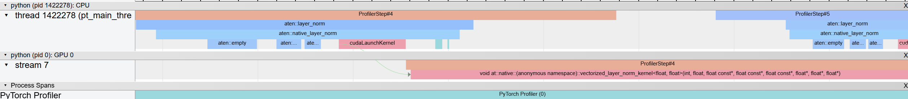
The sequence begins in the CPU (the upper section) with aten::layer_norm, progressing to aten::native_layer_norm and then transitioning to cudaLaunchKernel. From there, we move on to the GPU, where the vectorized_layer_norm_kernel kernel is called.
📝 Note
You can enable memory profiling by setting profile_memory to True in the profiler. However, this can lead to more complex traces.
While the PyTorch profiler offers a quick performance overview, the NVIDIA Nsight Compute CLI (ncu) provides deeper insights into GPU performance, including detailed execution times and memory usage for each kernel. Running the profiler is simple:
where layer_norm.py is a straightforward file that executes the layer normalization function. This command will generate log output, but a more effective way to visualize the results is by setting the output flag:
If you then open the file output.ncu-rep with Nsight Compute, you will have a view that looks like this, with clear warnings about compute and memory utilization and tips on how to make the kernel better at balancing compute and memory and achieve maximal occupancy:
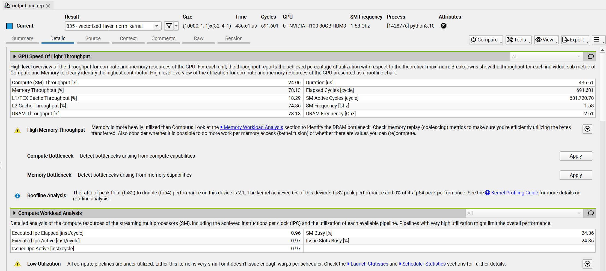
CPP extension¶
If the kernel you want to profile isn't already integrated into PyTorch, you can use PyTorch's cpp_extension module to easily compile and run custom CUDA code. The process is straightforward — just create your CUDA kernel in a .cu file, and use the load function from the cpp_extension module to load it in Python.
The .cu file would like this for a simple add kernel:
And here's the Python file to load the kernel:
Using this method, you can profile the custom CUDA kernel just as we demonstrated earlier with PyTorch's profiler or NVIDIA tools.
A2: Typical Scales in LLM Training¶
Let's get a feel for the typical sizes of things in LLM training. When we talk about memory or compute, we're often counting "elements" - think of these as numbers in tensors. To get the actual memory in bytes, you'll need to multiply by the size of each number (e.g., 2 bytes for BF16, 4 bytes for FP32).
Here are some quick ballpark figures:
- Input tokens: For each batch, we process \(seq \cdot mbs\) tokens, where \(mbs\) is the micro-batch size and \(seq\) is the sequence length.
- Activations (hidden states): For a single layer, the hidden state tensor is of size \(seq \cdot mbs \cdot h\) elements.
- Model weights and gradients: Each weight matrix in your model (e.g. linear layer) contains about \(h^2\) elements. Gradients have the same size as weights.
- Optimizer states: For each weight matrix (of \(h^2\) elements), an optimizer like Adam with mixed precision training will keep momentum and variance states in FP32 precision (\(2 \times 2 h^2\)), plus master weights in FP32 (\(2 h^2\)). So, the total number of optimizer states will be around (\(6 h^2\)) per weight matrix.
- Total model parameters: Each transformer block will store:
- Attention parameters:
- QKV projections: \(3h^2\) parameters
- Output projection: \(h^2\) parameters
- MLP parameters with Gated Linear Units (GLU):
- Gate and up projections: \(8h^2\) parameters (2 matrices of size \(h \times 4h\))
- Down projection: \(4h^2\) parameters (1 matrix of size \(4h \times h\))
- Total per block: \(16h^2\) with GLU MLPs, or \(12h^2\) without GLU
- For full model: \(16h^2 \cdot num\_layers\) (with GLU)
- Additional parameters:
- Input embeddings: \(vocab\_size \cdot h\)
- LM head: \(vocab\_size \cdot h\) (if not tied with input embeddings)
- Positional embeddings (if used): \(max\_seq\_len \cdot h\)
- Attention parameters:
- Forward and backward pass compute (FLOPS): A very rough estimate for the FLOPS in a forward pass is \(2 \cdot num\_tokens \cdot num\_params\). The backward pass compute is twice that: \(4 \cdot num\_tokens \cdot num\_params\).
A3: Math for Compute/Communication Overlap¶
Using the formulas from the previous section, we can estimate when computation and communication can effectively overlap in distributed training. Let's look at data parallelism (ZeRO-0) as an example.
Data parallelism communication analysis¶
The total gradient size that needs to be communicated is:
- Gradients = Parameters ≈ \(num\_layers \cdot 16h^2\)
During the backward pass, these gradients are communicated in buckets (default size 25 MB). The communication time to all-reduce each bucket is:
📝 Note
For bandwidth calculations, we use the bus bandwidth formulas from the NCCL documentation. These formulas account for the specific communication patterns when calculating effective bandwidth between GPUs.
The computation time for the backward pass is:
For effective overlap, we need:
This ratio helps determine if communication will become a bottleneck in training. When the ratio is less than 1, communication can be fully overlapped with computation.
ZeRO-3 (FSDP) communication analysis¶
For ZeRO-3, parameters and gradients are sharded across GPUs. Let's analyze the communication pattern for a model with transformer blocks of size \(16h^2\) parameters each:
- For each transformer block in the forward pass:
- All-gather parameters: \(16h^2/DP\) bytes per rank
- For each transformer block in the backward pass:
- All-gather parameters: \(16h^2/DP\) bytes per rank
- Reduce-scatter gradients: \(16h^2/DP\) bytes per rank
- Total communication per block: \(3 \cdot 16h^2/DP\) bytes
- Total communication for full model: \(3 \cdot num\_layers \cdot 16h^2/DP\) bytes
The communication time for all-gather operations is:
The computation time for the forward pass of one decoder layer is:
For effective overlap between computation and communication, we need:
When this ratio is less than 1, the communication of parameters for the next layer can be hidden behind the computation of the current layer.
TP communication analysis¶
For tensor parallelism, activations are sharded across GPUs in the TP regions (e.g. MLP block). Let's analyze the communication pattern:
- For each column-linear operation in the forward pass:
- All-gather activations: \(seq \cdot mbs \cdot h/TP\) bytes per rank
- For each column-linear operation in the backward pass:
- Reduce-scatter gradients: \(seq \cdot mbs \cdot h/TP\) bytes per rank
- And vice versa for row-linear operations. Each transformer block has 2 column-linear and 2 row-linear operations.
- Total communication per block: \(8 \cdot seq \cdot mbs \cdot h/TP\) bytes
- Total communication for full model: \(8 \cdot num\_layers \cdot seq \cdot mbs \cdot h/TP\) bytes
Let's take a TP region within a layer and analyze if we can overlap the all-gather communication with the computation of the next linear. The communication time for all-gather operations is:
While the computation time for the next linear layer (with parameters \(h^2\)) is:
For effective overlap, we want the communication time to be less than the compute time:
This ratio tells us whether we can successfully hide the all-gather communication behind the computation of the next linear. Interestingly, the ratio only depends on the hidden size \(h\) and tensor parallelism degree \(tp\), not on sequence length or batch size.
PP communication analysis¶
For pipeline parallelism, activations and gradients are communicated between pipeline stages. Let's analyze the communication pattern:
- For each micro-batch in the forward pass:
- Receive and send activations: \(2 \cdot seq \cdot mbs \cdot h\) bytes
- For each micro-batch in the backward pass:
- Receive and send gradients: \(2 \cdot seq \cdot mbs \cdot h\) bytes
- Total communication per micro-batch: \(4 \cdot seq \cdot mbs \cdot h\) bytes
- For gradient accumulation steps (\(gas\)), total communication: \(4 \cdot gas \cdot seq \cdot mbs \cdot h\) bytes
Let's analyze if we can overlap the communication of activations/gradients with computation of the next transformer block. The computation time for transformer blocks in the next pipeline stage is:
While the communication time for P2P transfer is:
For effective overlap, we want:
As with TP, this ratio is independent of sequence length and batch size. It depends on the hidden size \(h\), the number of layers in the next pipeline stage, and the ratio of compute to P2P bandwidth capabilities of the hardware.